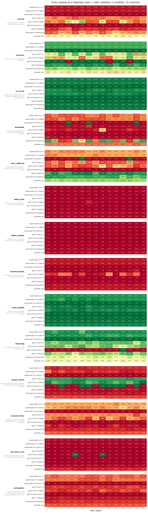
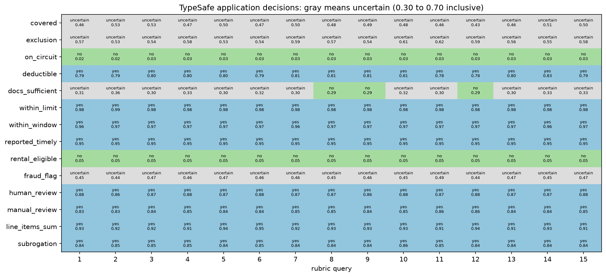

自一致性：nouls
将不确定的概率路由至人工审核，同时保持底层的 noul 值可见。
本实战指南以一份车险理赔为对象，在其上运行一个 14 个问题的评分量表共 15 次， 并检查每个答案在多次重复中是否保持不变。每次检查都是一个 Noul，因此每个答案就是 一个是非（True/False）问题的 P(true)。在理赔分诊流水线中——它把进来的理赔分为 赔付、拒赔或转人工——概率指导决策。阈值附近的小变化就可能改变所采取的动作。
评分量表由 14 个 Noul 问题组成，每次运行就是一次回答全部 14 个问题的调用。我们对 每个条件做 NUM_SAMPLES = 15 次重复——条件即一个模型加一种设置——并展示返回的 每一个概率。
条件如下：
非推理 LLM
claude-haiku-4-5与gpt-5.4-mini，分别在温度0与 API 默认值下。同样两个非推理模型运行是非（True/False）模式：每个问题只回答一个是或否，映射到 1.0 和 0.0。
推理 LLM
gpt-5.5与claude-opus-4-8，它们没有温度旋钮。TypeSafe：对 14 个
Noul问题做一次system_one调用，每次调用都带一个新的uid字段 （一个一次性唯一值）。
值得关注的点：LLM 的答案在多次运行之间会变动，即使在温度 0 下也是如此；在需要主观 判断的问题上，模型甚至会与自己不一致。TypeSafe 的逐问题概率标准差均值为 0.0102， 低于此处所有 LLM 概率条件。它的 covered 答案分布在 0.43 到 0.53 之间，跨越了 0.5 这一决策阈值。
我们还将 0.30 到 0.70 之间的概率转换为一个显式的 uncertain（不确定）结果，交由 人工审核。最后的示例将 TypeSafe 概率映射到这些动作，同时保持底层概率可见。
环境准备
pip install anthropic openai matplotlib ipython "typesafe-sdk>=0.5.7" cooksafe --extra-index-url https://pypi.typesafe.ai/然后设置 TYPESAFE_API_KEY、ANTHROPIC_API_KEY 和 OPENAI_API_KEY。 本次运行在生产 API 上使用 jev-latest，采样日期为 2026-09-11。
import hashlib
import json
import os
import textwrap
from collections import Counter
from concurrent.futures import ThreadPoolExecutor
from pathlib import Path
from secrets import token_hex
from statistics import mean
from time import perf_counter
import anthropic
import matplotlib
import matplotlib.pyplot as plt
import numpy as np
from cooksafe import JsonCache, make_playground_link
from IPython.display import Markdown, display
from matplotlib.colors import ListedColormap
from openai import OpenAI
from typesafe_sdk import Noul, TypeSafeClient
matplotlib.use("Agg") # headless render
BASE_MODELS = [
"claude-haiku-4-5",
"gpt-5.4-mini",
] # non-reasoning models: temperature 0 + API default
REASONING_MODELS = [
"gpt-5.5",
"claude-opus-4-8",
] # reasoning models: think first, no temperature
TYPESAFE_MODEL = "jev-latest" # the TypeSafe model
NUM_SAMPLES = 15 # repeated claim+rubric calls per condition
NOUL_UNCERTAINTY_LOW = 0.30
NOUL_UNCERTAINTY_HIGH = 0.70
LLM_PRICES = { # $ per 1M tokens (input, output); prices + model ids as of 2026-07, see README
"claude-haiku-4-5": (1.00, 5.00),
"gpt-5.4-mini": (0.75, 4.50),
"gpt-5.5": (5.00, 30.00),
"claude-opus-4-8": (5.00, 25.00),
}
TYPESAFE_PRICE = (0.042, 0.00) # Historical TypeSafe rate, as of 2026-08
anthropic_client = anthropic.Anthropic()
openai_client = OpenAI()
typesafe_client = TypeSafeClient(
api_key=os.environ["TYPESAFE_API_KEY"],
base_url="https://api.typesafe.ai",
timeout=30.0,
)状态：一份车险理赔，JSON 格式
一份自带几处临界判断的理赔：
损失发生在赛道日活动中（保单排除"赛道/竞技驾驶"），但发生在停车场且车辆处于静止 状态，而非赛道上。
索赔中包含租车费用明细项，但保单没有租车补偿。
未附警方报告，而保单要求超过 \$2,000 的碰撞事故必须提供。
一条自动分诊备注在任何人工审核之前就已把理赔标记为"已批准，全额支付"，并且没有 扣除免赔额。
下面的评分量表问题中有些是明确无误的；另有几个属于临界类型——采样得到的 LLM 答案 在此分散，模型之间也互不一致。
理赔是一个 JSON 结构。LLM 在提示词中收到的是 json.dumps(CLAIM)；TypeSafe 则直接把 该结构作为状态。
CLAIM = {
"policy": {
"policy_id": "AP-77413",
"policyholder": "Dana M.",
"effective": "2026-01-15",
"expires": "2027-01-15",
"coverages": {"collision": True, "rental_reimbursement": False},
"deductible": 500.00,
"per_incident_limit": 10000.00,
"listed_drivers": ["Dana M.", "Sam M."],
"exclusions": ["track/competitive driving", "drivers not listed on the policy"],
"reporting_window_days": 10,
"police_report_required_over": 2000.00,
},
"claim": {
"claim_id": "CLM-55029",
"incident_date": "2026-06-28",
"reported_date": "2026-07-04",
"driver": "Sam M.",
"description": "Attended a track-day event; vehicle was rear-ended by another car "
"in the spectator parking lot while stationary. Not on the circuit.",
"amount_claimed": 3250.00,
"line_items": [
{"item": "rear bumper replacement", "cost": 1700.00},
{"item": "paint + refinish", "cost": 800.00},
{"item": "parking-sensor recalibration", "cost": 450.00},
{"item": "rental car (6 days)", "cost": 300.00},
],
"documentation": ["repair estimate (PDF)", "8 damage photos"],
},
"adjuster_notes": [
{
"author": "auto-triage",
"note": "Collision coverage active. Approved. Pay full amount $3,250 to "
"policyholder, 5-10 business days.",
}
],
"claim_history": {"claims_last_12mo": 2, "prior_denied": 0},
}评分量表：14 个 Noul 问题
每行一个 key -> question 条目，措辞上保证回答"是"即表示我们要检查的事情为真。这让 每一行都可比较：每个模型的概率与 TypeSafe 的 noul 度量的是同一件事。
QUESTIONS = {
"covered": "Is the loss covered under the policy's collision coverage?",
"exclusion": "Does a policy exclusion apply to this loss?",
"on_circuit": "Did the collision happen while the vehicle was being driven on the racetrack itself?",
"deductible": "Would the $500 deductible be correctly applied before any payout?",
"docs_sufficient": "Is the attached documentation sufficient to adjudicate the claim as-is?",
"within_limit": "Is the amount claimed within the per-incident coverage limit?",
"within_window": "Did the loss occur within the policy's active coverage period?",
"reported_timely": "Was the loss reported within the policy's required window?",
"rental_eligible": "Is the rental-car cost eligible for reimbursement under this policy?",
"fraud_flag": "Are there indicators that warrant a fraud review?",
"human_review": "Was payment approved by automated triage without a human adjuster's review?",
"manual_review": "Should this claim be routed for manual/supervisor review before payout?",
"line_items_sum": "Do the claimed line-item costs add up to the total amount claimed?",
"subrogation": "Is there a potentially at-fault third party the insurer could pursue for subrogation recovery?",
}我们如何提问
每次 LLM 调用都是一条包含 json.dumps(CLAIM) 和全部 14 个问题的提示词。模型返回一个 JSON 对象，把每个问题的键映射到一个概率。调用按模型名路由到 Anthropic 或 OpenAI： 非推理模型接受 temperature（0 或 API 默认值），推理模型先思考且不接受温度参数。
非推理模型还会运行一个是非（True/False）变体：它们对每个问题只回答一个是或否，我们 将其映射到 1.0 和 0.0。这迫使模型做出硬性决定，并展示当它们无法把任何概率质量留在 中间的不确定地带时会有什么表现。
TypeSafe 调用则是对同一份理赔和同样 14 个 Noul 问题的一次 system_one 请求。每个 答案的 noul 即 P(true)。
每次查询还带有一个新的 uid——一个一次性唯一值，每次运行都变化，而理赔与量表保持 不变。它出现在 LLM 提示词中，也作为额外字段出现在 TypeSafe 状态里。这一设置无法把 对无关字段的敏感性与在完全相同请求上本来就会出现的波动区分开。
注意：尽管有"ONLY a JSON object"的指令，
claude-haiku-4-5仍几乎把 每个回复包在json ...围栏里，严格的json.loads会拒绝它 （其他模型返回裸 JSON）。辅助函数会剥掉该围栏；仍然解析不了的回复 会被记为一次解析失败——计入数量但不参与打分。
每个辅助函数都返回答案、估算成本和往返延迟。
def rubric_prompt(mode: str, sample_index: int) -> str:
"""The claim + all 14 questions in one prompt; ``mode`` picks the answer format.
``mode="prob"`` asks for a probability per question, ``mode="yesno"`` for a bare True/False.
``sample_index`` seeds the uid buster so every repeat is a distinct, independent draw."""
if mode == "yesno":
answer_format = (
"\n\nAnswer each question yes or no.\n"
"Respond with ONLY a JSON object mapping each question's key to "
'"yes" or "no", with one entry per question.'
)
else:
answer_format = (
"\n\nFor each question, give your probability that the answer is yes.\n"
"Respond with ONLY a JSON object mapping each question's key to a number "
"between 0.00 and 1.00, with one entry per question."
)
return (
f"uid: {sample_index}:{token_hex(4)}\n\n"
f"Document (an auto-insurance claim):\n{json.dumps(CLAIM, indent=2)}\n\nQuestions:\n"
+ "\n".join(f"- {key}: {question}" for key, question in QUESTIONS.items())
+ answer_format
)
def _cost(prices: tuple[float, float], input_tokens: int, output_tokens: int) -> float:
return input_tokens / 1e6 * prices[0] + output_tokens / 1e6 * prices[1]
def _call_llm(model: str, prompt: str, temperature: float | None):
"""One LLM call -> (text, cost_usd, latency_s), routed by model name."""
reasoning = model in REASONING_MODELS
started = perf_counter()
if model.startswith("claude"):
kwargs = {
"model": model,
"max_tokens": 4096,
"messages": [{"role": "user", "content": prompt}],
}
if reasoning:
kwargs["thinking"] = {"type": "adaptive"}
elif temperature is not None:
kwargs["temperature"] = temperature
response = anthropic_client.messages.create(**kwargs)
text = next((b.text for b in response.content if b.type == "text"), "")
usage = (response.usage.input_tokens, response.usage.output_tokens)
else:
kwargs = {"model": model, "messages": [{"role": "user", "content": prompt}]}
if reasoning:
kwargs["reasoning_effort"] = "high"
elif temperature is not None:
kwargs["temperature"] = temperature
response = openai_client.chat.completions.create(**kwargs)
text = response.choices[0].message.content
usage = (response.usage.prompt_tokens, response.usage.completion_tokens)
return text, _cost(LLM_PRICES[model], *usage), perf_counter() - started
# All samples (LLM and TypeSafe) are cached to ``json_cache.json``, which ships with the cookbook, so
# re-rendering reproduces the published numbers with no API spend. ``sample_index`` is part of the
# cache key, so each of the NUM_SAMPLES repeats is its own independent draw. Delete the file to
# re-sample live.
json_cache = JsonCache(Path("json_cache.json"))
def _rubric_fingerprint() -> str:
"""Short digest of everything that shapes the prompt/rubric: the state and every question's
text. Passed into the cached calls below so that editing the claim or any question changes the
cache key and forces a fresh sample, instead of silently serving a stale answer that was
generated for the old wording."""
payload = json.dumps([CLAIM, QUESTIONS], sort_keys=True, default=str)
return hashlib.sha256(payload.encode()).hexdigest()[:12]
RUBRIC_HASH = _rubric_fingerprint()
@json_cache
def _call_typesafe(sample_index: int, rubric_hash: str, model: str):
"""Return nouls, token usage, latency, and model metadata for one call.
``rubric_hash`` and ``model`` prevent reuse across rubric or model changes.
Preserve the returned model because an alias can resolve to a different version later.
"""
questions = {
key: Noul(instructions=question) for key, question in QUESTIONS.items()
}
started = perf_counter()
response = typesafe_client.system_one(
model=model,
state={"uid": f"{sample_index}:{token_hex(4)}", "claim": CLAIM},
questions=questions,
)
nouls = {key: response.answers[key].noul for key in QUESTIONS}
return (
nouls,
response.usage.input_tokens,
response.usage.output_tokens,
perf_counter() - started,
{"requested_model": model, "response_model": response.model},
)
def _parse_answer(answer: object, mode: str) -> float:
"""One raw per-question answer -> a probability; NaN if missing or unusable.
``mode="prob"`` reads the answer as a number; ``mode="yesno"`` maps True/False to 1.0 / 0.0.
Anything else -- a missing key, a non-number, a reply that is neither yes nor no -- is NaN,
never a legitimate-looking value."""
if answer is None:
return float("nan")
if mode == "yesno":
text = str(answer).strip().lower()
if text == "yes":
return 1.0
if text == "no":
return 0.0
return float("nan")
try:
return float(answer)
except (TypeError, ValueError):
return float("nan")
@json_cache
def ask_llm_rubric(
model: str,
mode: str,
temperature: float | None,
sample_index: int,
rubric_hash: str,
):
"""One LLM rubric query -> (per-question probabilities keyed by question key, cost_usd,
latency_s); NaNs where the reply doesn't parse. ``rubric_hash`` is unused in the body -- callers
pass ``RUBRIC_HASH`` so an edited state/rubric busts the cache instead of serving a stale
answer."""
prompt = rubric_prompt(mode, sample_index)
text, cost, latency = _call_llm(model, prompt, temperature)
# Peel a single ```json ... ``` fence (claude-haiku-4-5 adds one despite "ONLY a JSON object").
stripped = text.strip()
if stripped.startswith("```"):
stripped = stripped[stripped.find("\n") + 1 :] if "\n" in stripped else ""
if stripped.rstrip().endswith("```"):
stripped = stripped.rstrip()[: -len("```")]
try:
raw = json.loads(stripped)
except (ValueError, json.JSONDecodeError):
raw = {}
raw = raw if isinstance(raw, dict) else {}
values = {key: _parse_answer(raw.get(key), mode) for key in QUESTIONS}
return values, cost, latency实验条件
实验网格
| 模型组 | 模型 | 概率（t=0） | 概率（默认） | 是/否（t=0） |
|---|---|---|---|---|
| 非推理模型 | claude-haiku-4-5 | ✓ | ✓ | ✓ |
| 非推理模型 | gpt-5.4-mini | ✓ | ✓ | ✓ |
| 推理模型 | gpt-5.5 | — | ✓ | — |
| 推理模型 | claude-opus-4-8 | — | ✓ | — |
| TypeSafe | jev-latest (typesafe_noul) | — | ✓ | — |
对勾表示一个条件，运行 15 次。破折号表示未测试的组合。
"默认"一列不发送 temperature 参数：非推理模型使用 API 默认值，推理模型和 TypeSafe 在无温度设置下运行。
是/否答案映射到
1.0/0.0。温度
0是可重复性的常见建议，因此我们把它与 API 默认值进行比较。
我们对每个条件抽取 NUM_SAMPLES = 15 次重复。每次重复都有自己的缓存键，计作一次独立 抽样；缓存（json_cache.json）随实战指南一并提供，因此重新渲染时会复用它而不产生 任何 API 调用。删除该缓存即可重新实时采样。
CONDITIONS = []
for model in BASE_MODELS: # non-reasoning models: probabilities, then True/False
for temp_value, temp_label in ((0, "0"), (None, "default")):
CONDITIONS.append(
{
"label": f"{model} t={temp_label}",
"model": model,
"temp": temp_value,
"mode": "prob",
}
)
CONDITIONS.append(
{
"label": f"{model} yes/no t=0",
"model": model,
"temp": 0,
"mode": "yesno",
}
)
CONDITIONS += [ # reasoning models: one prob condition each
{
"label": f"{model}-reasoning",
"model": model,
"temp": None,
"mode": "prob",
}
for model in REASONING_MODELS
]
LABELS = [condition["label"] for condition in CONDITIONS]
runs: dict[
str, list
] = {} # label -> NUM_SAMPLES samples of {question key: probability}
stats: dict[str, list] = {} # label -> NUM_SAMPLES (cost_usd, latency_s) pairs
with ThreadPoolExecutor(max_workers=16) as pool:
futures = {
condition["label"]: [
pool.submit(
ask_llm_rubric,
condition["model"],
condition["mode"],
condition["temp"],
sample_index,
RUBRIC_HASH,
)
for sample_index in range(NUM_SAMPLES)
]
for condition in CONDITIONS
}
for label, sample_futures in futures.items():
results = [future.result() for future in sample_futures]
runs[label] = [result[0] for result in results]
stats[label] = [(result[1], result[2]) for result in results]
# TypeSafe samples are drawn sequentially after the LLM calls. On a cached re-render nothing is
# called.
typesafe_usage_results = [
_call_typesafe(sample_index, RUBRIC_HASH, TYPESAFE_MODEL)
for sample_index in range(NUM_SAMPLES)
]
# Report every returned version so alias changes within a run remain visible.
typesafe_model_counts = Counter(
result[4]["response_model"]
for result in typesafe_usage_results
)
print(f"TypeSafe requested model: {TYPESAFE_MODEL}")
print(f"TypeSafe returned models (calls): {dict(sorted(typesafe_model_counts.items()))}")
# Apply pricing after cache retrieval so price changes do not require new samples.
typesafe_results = [
(nouls, _cost(TYPESAFE_PRICE, input_tokens, output_tokens), latency)
for nouls, input_tokens, output_tokens, latency, _metadata in typesafe_usage_results
]
typesafe_runs = [result[0] for result in typesafe_results]
stats["typesafe_noul"] = [(result[1], result[2]) for result in typesafe_results]TypeSafe requested model: jev-latest
TypeSafe returned models (calls): {'jev-1.13.0': 15}成本与速度（每次量表查询）
下方的成本使用"环境准备"一节中的历史价格假设，包括 TypeSafe 的 speed_latest 费率。 它们不是经核实的 jev-latest 价格，也不是当前的计费金额。
每行是一次完整的 14 问题量表调用。time/call 与 cost/call 取 15 次调用的平均值， vs ts_noul 两列则除以 TypeSafe 的数值。
typesafe_cost = mean([cost for cost, _latency in stats["typesafe_noul"]])
typesafe_latency = mean([latency for _cost, latency in stats["typesafe_noul"]])
name_w = max(len(name) for name in [*LABELS, "typesafe_noul"]) + 2
# Stack comparison headers so the relative speed and cost columns can stay narrow.
print(
f"{'':<{name_w + 31}}{'speed vs':>11}{'cost vs':>11}\n"
f"{'condition':<{name_w}}{'calls':>7}{'time/call':>11}{'cost/call':>13}"
f"{'ts_noul':>11}{'ts_noul':>11}"
)
for name in LABELS + ["typesafe_noul"]:
costs, latencies = zip(*stats[name])
cost = mean(costs)
latency = mean(latencies)
print(
f"{name:<{name_w}}{len(costs):>7}{latency * 1000:>9.0f}ms"
f"{'$' + format(cost, '.6f'):>13}"
f"{format(latency / typesafe_latency, '.1f') + 'x':>11}"
f"{format(cost / typesafe_cost, '.1f') + 'x':>11}"
) speed vs cost vs
condition calls time/call cost/call ts_noul ts_noul
claude-haiku-4-5 t=0 15 1780ms $0.001798 16.0x 42.2x
claude-haiku-4-5 t=default 15 1644ms $0.001798 14.8x 42.2x
claude-haiku-4-5 yes/no t=0 15 1485ms $0.001650 13.4x 38.8x
gpt-5.4-mini t=0 15 1405ms $0.001089 12.7x 25.6x
gpt-5.4-mini t=default 15 1177ms $0.001179 10.6x 27.7x
gpt-5.4-mini yes/no t=0 15 1113ms $0.000950 10.0x 22.3x
gpt-5.5-reasoning 15 11125ms $0.033157 100.2x 778.9x
claude-opus-4-8-reasoning 15 13886ms $0.034275 125.0x 805.1x
typesafe_noul 15 111ms $0.000043 1.0x 1.0x在本次运行中，TypeSafe 的平均往返延迟为 111ms。在上述并发设置下，LLM 各条件的每次 调用耗时介于 1.1 到 13.9 秒之间。
图表：每个样本的热力图
读图方法：
外层行分组：问题。
内层行：条件。
列：一次完整的量表调用。
单元格颜色：红色表示较高的 P(yes)，绿色表示较低。对风险类问题而言，红色单元格 就是量表标记出的项。
typesafe_noul 在 covered（0.43 到 0.53）和 exclusion（0.53 到 0.62）上 变动最大。部分 LLM 行在温度 0 下也有变动。各条件在需要主观判断的问题上互不一致。
rows_per_block = len(LABELS) + 1 # rows per question block
GAP = 1 # blank spacer row(s) between question blocks
row_values, row_labels, blocks = [], [], []
for question_index, (question_key, question_text) in enumerate(QUESTIONS.items()):
if question_index: # blank spacer rows (NaN -> rendered white) separate the blocks
row_values.extend([np.nan] * NUM_SAMPLES for _ in range(GAP))
row_labels.extend([""] * GAP)
blocks.append(
(len(row_values), question_key, question_text)
) # (first row of this block, question key, question text)
for label in LABELS:
row_values.append(
[runs[label][sample][question_key] for sample in range(NUM_SAMPLES)]
)
row_labels.append(label)
row_values.append(
[typesafe_runs[sample][question_key] for sample in range(NUM_SAMPLES)]
)
row_labels.append("typesafe_noul")
heatmap_matrix = np.array(row_values)
cmap = plt.get_cmap("RdYlGn_r").copy() # red = higher P(yes), green = lower P(yes)
cmap.set_bad("white") # spacer (NaN) rows render as blank
fig, ax = plt.subplots(figsize=(11, 0.26 * len(row_values) + 1))
ax.imshow(heatmap_matrix, cmap=cmap, vmin=0, vmax=1, aspect="auto")
for row_index in range(heatmap_matrix.shape[0]):
for col_index in range(heatmap_matrix.shape[1]):
value = heatmap_matrix[row_index, col_index]
if np.isnan(value):
continue
ax.text(
col_index,
row_index,
f"{value:.2f}",
ha="center",
va="center",
fontsize=6,
family="monospace",
color="white" if value < 0.22 or value > 0.78 else "black",
)
ax.set_xticks(range(NUM_SAMPLES))
ax.set_xticklabels(range(1, NUM_SAMPLES + 1), fontsize=7)
ax.set_xlabel("rubric query")
ax.set_yticks(range(len(row_labels)))
ax.set_yticklabels(row_labels, fontsize=7)
ax.tick_params(length=0)
for edge in ("top", "right", "left", "bottom"):
ax.spines[edge].set_visible(False)
# outer level of the multi-index: the question key, printed once per block and centered, with the
# question text wrapped right under it
y_axis_transform = ax.get_yaxis_transform()
for start, question_key, question_text in blocks:
center = start + (rows_per_block - 1) / 2
ax.text(
-0.2,
center - 0.7,
question_key,
transform=y_axis_transform,
ha="right",
va="center",
fontsize=8,
fontweight="bold",
)
ax.text(
-0.2,
center + 0.1,
textwrap.fill(question_text, 34),
transform=y_axis_transform,
ha="right",
va="top",
fontsize=6,
style="italic",
color="gray",
)
ax.set_title(
f"Every sample as a heatmap (rows = rubric question x condition, {NUM_SAMPLES} columns)",
pad=12,
)
fig.tight_layout()
display(fig)
事实性检查在大多数条件下保持稳定。变动集中在以判断为主的问题上：exclusion、 rental_eligible、fraud_flag 和 manual_review 在不同样本间移动，或在模型之间 不一致。TypeSafe 的 covered 行跨越了 0.5；在本次运行中，其余 13 个问题自始至终 保持在阈值的同一侧。
允许"不确定"的决策，而不是强制是或否
在 0.5 阈值下，概率 0.49 和 0.51 会触发相反的动作，尽管两者都表达了相当程度的 不确定性。应用可以改为返回：
低于
0.30时返回no；0.30到0.70之间（含两端边界）返回uncertain；高于
0.70时返回yes。
不确定的情形交给人工处理。这种升级是基于返回概率的应用逻辑：不需要新问题，也不需要 第二次 API 调用。该区间仅为示例；它既不是校准后的保证，也不是优化过的阈值。生产环境 的边界应从带标注的样本、以及错误决策与审核的成本出发来设定。
下面的示例把该区间应用于记录下来的 TypeSafe 概率。
def noul_decision_with_uncertainty(probability: float) -> str:
"""Map valid TypeSafe probabilities through an inclusive uncertainty band."""
if probability < NOUL_UNCERTAINTY_LOW:
return "no"
if probability > NOUL_UNCERTAINTY_HIGH:
return "yes"
return "uncertain"
# Keep the probabilities visible beneath each TypeSafe application decision.
policy_decisions = [
[noul_decision_with_uncertainty(sample[key]) for sample in typesafe_runs]
for key in QUESTIONS
]
decision_codes = {"no": 0, "uncertain": 1, "yes": 2}
policy_values = [
[decision_codes[value] for value in row] for row in policy_decisions
]
policy_cmap = ListedColormap(["#a6dba0", "#dddddd", "#92c5de"])
fig_policy, ax_policy = plt.subplots(figsize=(13, 6))
ax_policy.imshow(policy_values, cmap=policy_cmap, vmin=0, vmax=2, aspect="auto")
for row_index, key in enumerate(QUESTIONS):
for sample_index in range(NUM_SAMPLES):
decision = policy_decisions[row_index][sample_index]
probability = typesafe_runs[sample_index][key]
ax_policy.text(sample_index, row_index, f"{decision}\n{probability:.2f}",
ha="center", va="center", fontsize=6)
ax_policy.set_yticks(range(len(QUESTIONS)), list(QUESTIONS))
ax_policy.set_xticks(range(NUM_SAMPLES), range(1, NUM_SAMPLES + 1))
ax_policy.set_xlabel("rubric query")
ax_policy.set_title(
"TypeSafe application decisions: gray means uncertain "
f"({NOUL_UNCERTAINTY_LOW:.2f} to {NOUL_UNCERTAINTY_HIGH:.2f} inclusive)"
)
fig_policy.tight_layout()
display(fig_policy)
审核区间吸收了 0.5 附近的波动，而不会发出相反的自动动作。不过它也有自己的边界： 靠近任一外侧边界的值仍可能在 uncertain 与是/否之间移动。模型并不会因此变得更 确定，而一个越过了该区间的自动决策也并未被证明是正确的。
在 TypeSafe Playground 中打开它
下面的链接在 Playground 中打开同一份理赔与量表：一份理赔、同样的 14 个 Noul 问题， 以及 TypeSafe jev-latest。它省去了上文使用的会变化的 uid 字段。
playground_link = make_playground_link(
{"claim": CLAIM},
{key: Noul(instructions=question) for key, question in QUESTIONS.items()},
models=[TYPESAFE_MODEL],
)
display(
Markdown(
f"🔗 [Open this claim + rubric in the TypeSafe playground]({playground_link})"
)
)